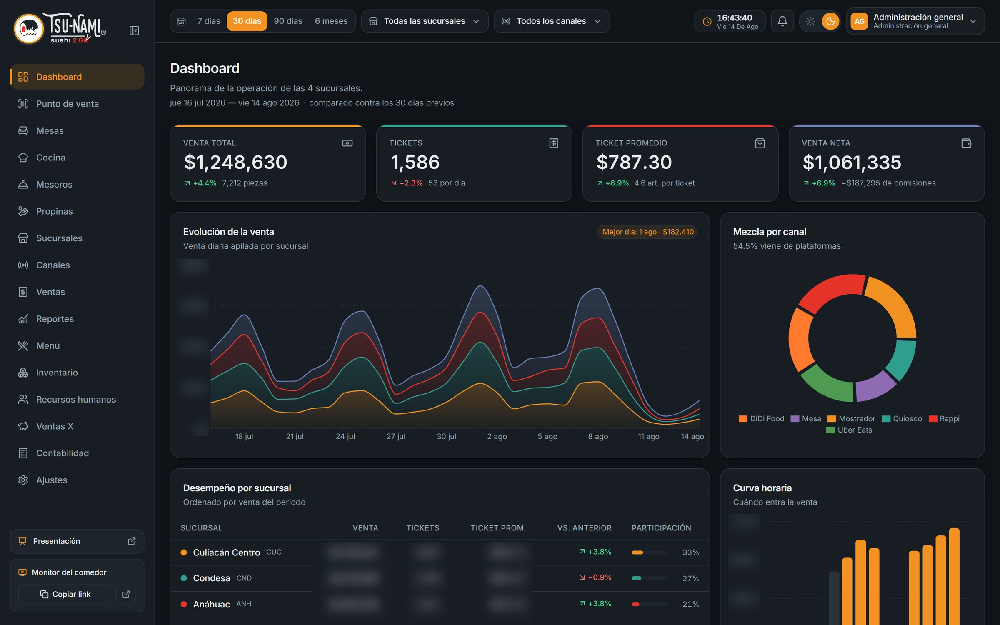
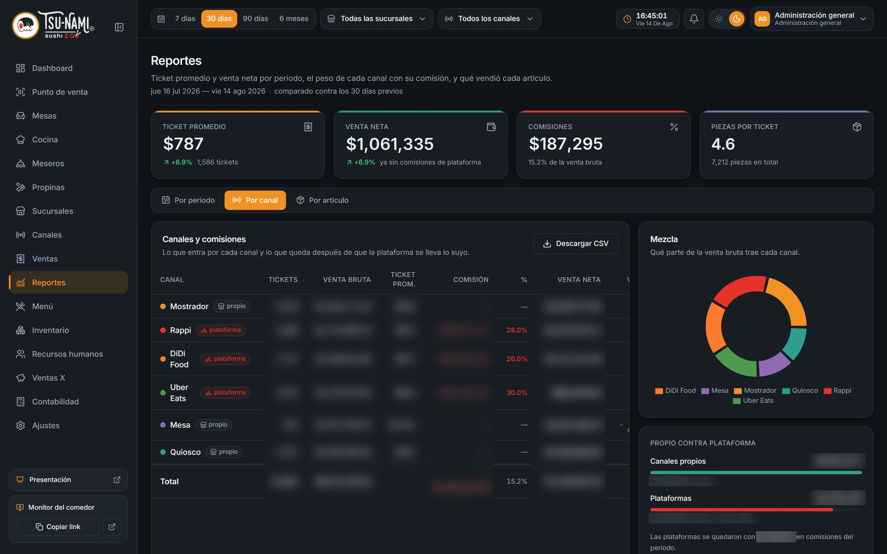
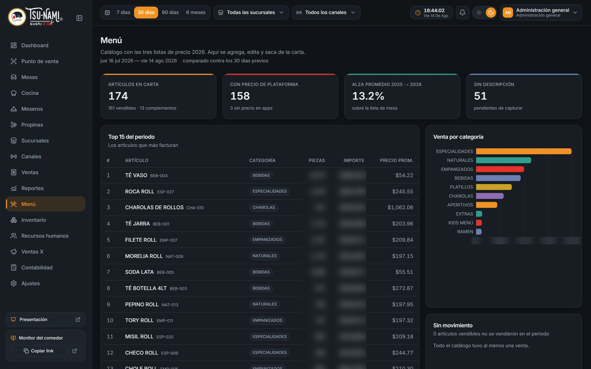
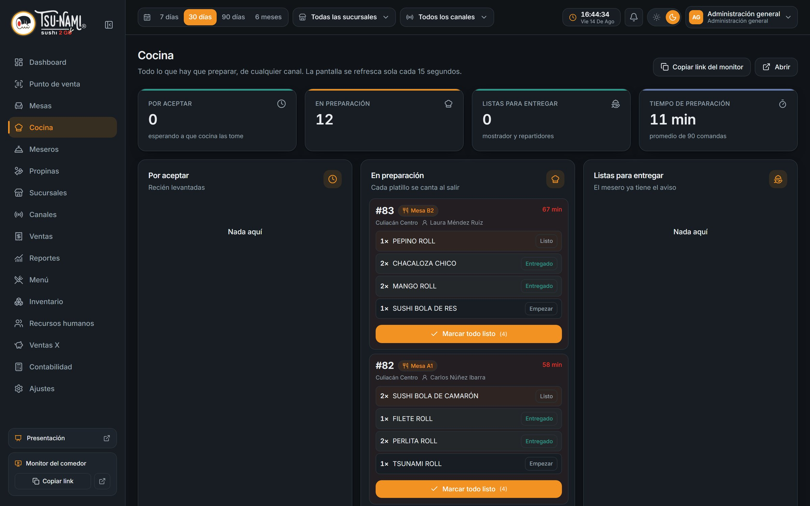
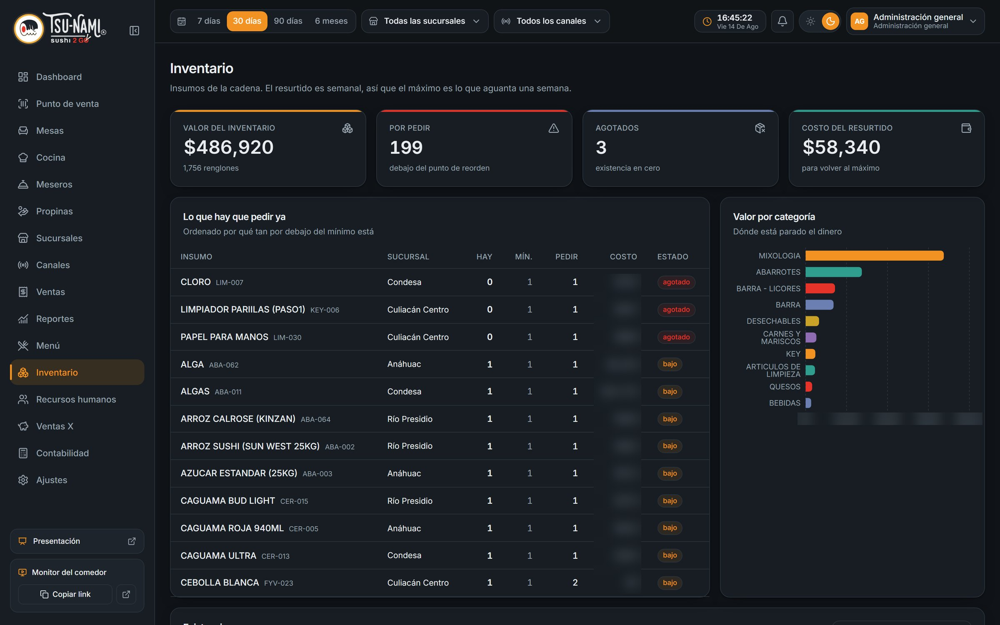
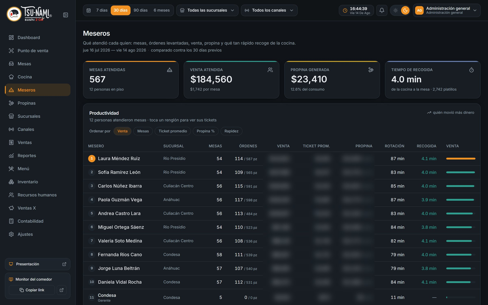
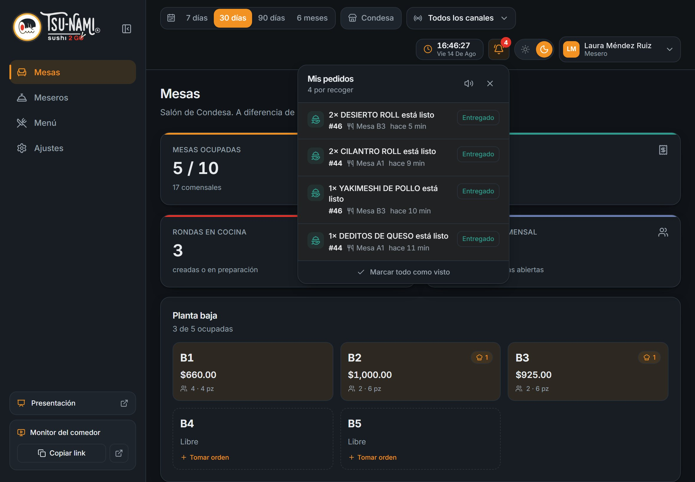
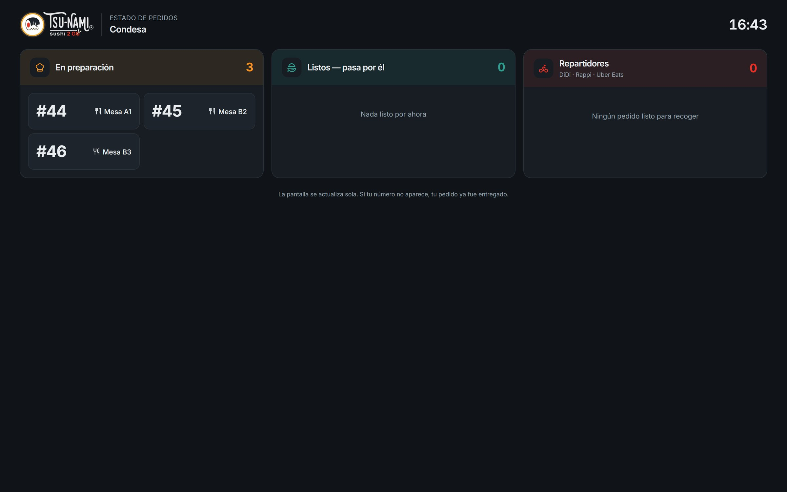
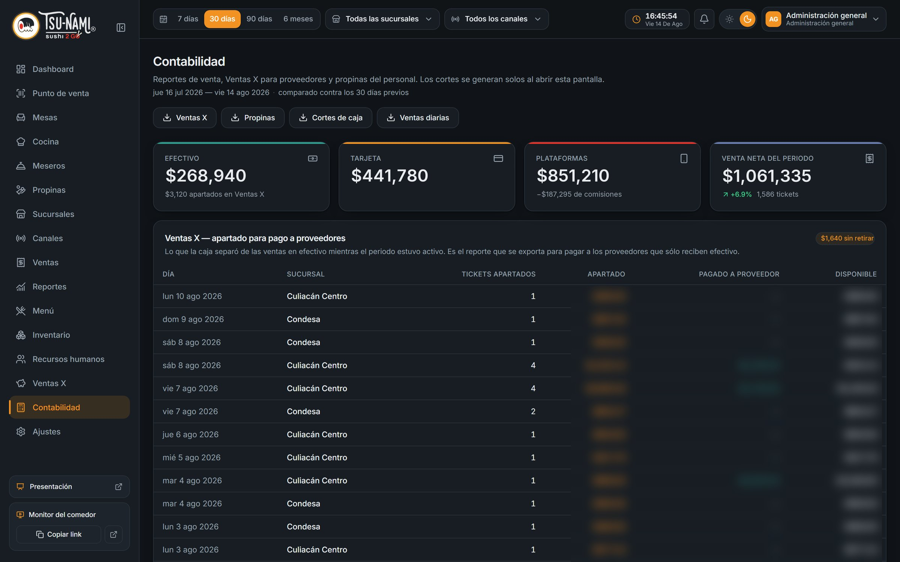

Lo que cambió en Tsunami Sushi 2Go con el sistema
Cómo se trabajaba antes, cómo se trabaja ahora y qué decisiones se toman hoy con datos. También aclaramos qué análisis hace el sistema por dentro y qué no hace.
Las capturas usan nombres y cifras ficticias · ver nota al final
De cuatro sucursales sueltas a una sola operación
La venta se registraba en un lado, el inventario en otro y la nómina en una hoja de cálculo. Esto es lo que cambió, área por área.
| Área | Antes | Ahora |
|---|---|---|
| Venta de la cadena | Media mañana juntando cifras; corte a mano | En pantalla al momento, comparada contra el periodo anterior |
| Plataformas | Sin un reporte de cuánto se quedaba cada app | Comisión en pesos por canal y venta neta real |
| Cocina | Un límite fijo de 15 min para todo; nadie lo veía | Semáforo por fase, día y sucursal, calibrado con tiempos reales |
| Inventario | Excel sin existencias; precios sin historial | Punto de reorden, pedido sugerido y alertas automáticas |
| Meseros | Sin medir quién vende, qué tan rápido y cómo atiende | Productividad, calificación del cliente e incentivos |
| Cancelaciones | El ticket equivocado se quedaba cobrado; el corte se corregía a mano | Cancelación con motivo, responsable y reporte |
| Descuentos | Se daban sin motivo registrado | Convenios autorizados y auditables |
| Nómina | Hoja de cálculo | Sale del checador: retardos, tiempo extra, finiquitos de ley |
Saber cuánto se vendió ya no cuesta media mañana
Juntar la venta de las cuatro sucursales era trabajo manual, y el corte del día se sacaba a mano. Comparar contra la semana pasada era otra hoja más.
Al entrar se ve la venta de las 4 sucursales y los 6 canales, ya comparada contra el periodo anterior. Los cortes se generan solos.

- Comparación automática: cada indicador trae su variación contra un periodo de la misma duración inmediatamente anterior.
- Curva horaria: a qué hora entra la venta, que es lo que decide los turnos.
El sistema usa análisis de datos
El sistema realiza análisis de datos sobre la operación real de las cuatro sucursales: estadística, comparaciones y reglas de decisión que corren solas todos los días.
✓ Lo que sí hace
- Comparación entre periodos en todos los indicadores.
- Mediana y percentil 90 de los tiempos reales de cocina.
- Reglas de decisión con umbrales explícitos: separar barras, alertas de insumos.
- Penetración por categoría y rentabilidad por canal.
- Cálculos de ley: tiempo extra, finiquitos y proporcionales.
✕ Por qué así y no con IA
- Cada número se puede explicar: se sabe exactamente de dónde sale.
- Es auditable: un contador o un gerente puede rehacer la cuenta.
- No hay caja negra: la persona decide y el sistema le da el dato.
- Es la base para IA: con meses de datos limpios y ordenados, un modelo de pronóstico sí tiene con qué trabajar (ver la lámina “Lo que sigue”).
Seis análisis que corren solos, con su fórmula a la vista
Ninguno necesita que alguien arme una hoja de cálculo. Se recalculan con cada venta, cada comanda y cada movimiento de inventario.
Periodo contra periodo
Cada indicador contra una ventana de la misma duración justo antes.
Semáforo de cocina
Los umbrales salen de los tiempos reales de cada fase y cada tipo de día.
¿Separar barras?
Recomienda dividir la cocina sólo si la carga se reparte y los tiempos son muy distintos.
Alertas de insumos
Aumentos de costo, lotes por caducar y mercancía estancada.
Rentabilidad por canal
Lo que queda de cada venta después de la comisión de cada plataforma.
Penetración por categoría
En qué proporción de tickets aparece cada categoría del menú.
Por fin se ve cuánto se lleva cada plataforma
La venta de DiDi, Rappi y Uber Eats se veía en bruto, sin un reporte que restara la comisión de cada plataforma.
Cada canal muestra su venta bruta, la comisión en pesos y la venta neta. Los canales propios se comparan contra las plataformas.
- La comisión de cada plataforma (26 %, 28 % o 30 %) se configura una vez y se descuenta sola.
- La decisión de empujar el canal propio se toma con el dato en la mano.
- Todo se exporta a CSV.

La carta se decide con lo que de verdad se vende
Qué platillo quitar o qué precio subir se decidía sin un reporte por artículo a la mano.
Top del periodo, venta por categoría, artículos sin movimiento y el alza promedio de precios 2025 → 2026.

- Frecuencia además de importe: en cuántos tickets aparece cada artículo, no sólo cuánto facturó.
- Penetración por categoría contra el periodo anterior: si los rollos pierden presencia en los tickets, se nota.
El semáforo de cocina aprende de los tiempos reales
Un solo límite fijo de 15 minutos para todas las fases y todos los días. Al no reflejar la realidad de la cocina, nadie lo veía.
Cada fase tiene su verde, ámbar y rojo, distinto entre semana y fin de semana y por sucursal.
// Botón "calibrar" en Ajustes ámbar = mediana de los minutos reales de esa fase rojo = percentil 90 // sólo 1 de cada 10 comandas tarda más
El sistema propone los umbrales y una persona los revisa y los guarda.

¿Vale la pena dividir la cocina en estaciones? El sistema lo mide
Antes todo entraba a una sola cola: una bebida esperaba detrás de los rollos. Dividir la cocina en estaciones (barra fría, caliente, bebidas) cuesta gente y espacio, así que la decisión quedaba en el aire. Ahora el sistema mide la carga real de cada estación y da una recomendación con reglas explícitas.
1 · ¿La carga se reparte?
Si una sola estación se lleva el 70 % o más de los platillos, separar no ayuda: el cuello de botella sigue ahí.
2 · ¿Los tiempos son muy distintos?
Se compara la mediana de la estación más lenta contra la más rápida. Si hay 3× o más de diferencia, lo rápido está esperando a lo lento.
3 · Recomendación
Separar sólo si se cumplen las dos. Si no, el sistema dice por qué no conviene todavía.
El inventario avisa antes de que haya un problema
Un Excel con la columna de existencias vacía. El precio nuevo de un insumo borraba el anterior y la caducidad no se registraba.
Existencia por sucursal, punto de reorden y cuánto pedir para el resurtido semanal, con su costo.
- Alerta de costo: un insumo que subió 10 % o más en los últimos 60 días.
- Alerta de caducidad: lotes que vencen en 7 días o menos.
- Mercancía estancada: 30 días sin salida con dinero parado.

Quién vende, qué tan rápido y cómo lo califica el cliente
No había un registro por persona de cuánta venta movía cada mesero ni de qué tan rápido recogía los platillos.
Mesas, venta, ticket promedio, propina, rotación y tiempo de la cocina a la mesa por persona.

Calificación del cliente
El ticket imprime un código QR de un solo uso. El cliente califica de 1 a 5 estrellas y la calificación se suma al tablero del mesero.
Incentivos sobre lo que el mesero controla
Metas de ticket promedio, propina, rapidez o calificación, con su avance al día. El bono lo autoriza una persona.
Menos vueltas a la cocina, menos clientes preguntando
Cuando un platillo está listo, el aviso llega solo: al mesero en su tableta y al cliente en la pantalla del comedor. Nadie tiene que ir a la cocina a preguntar.


- Recomendados: la dirección marca con estrella los platillos que quiere empujar y salen primero en la tableta y en el punto de venta. Si se agotan, se esconden solos.
- Los repartidores de plataforma tienen su propia columna en el monitor.
Cada peso tiene explicación
| Antes | Ahora | |
|---|---|---|
| Cancelar | El ticket equivocado se quedaba cobrado y el corte se corregía a mano | Con motivo y responsable, hasta 24 h después |
| Descuentos | Sin motivo registrado | Sólo por convenio autorizado |
| Cortes | A mano | Se generan solos |

La nómina sale del checador, no de una hoja de cálculo
La nómina se armaba en hoja de cálculo, con retardos, horas extra y finiquitos capturados a mano.
Las entradas y salidas del checador alimentan retardos, tiempo extra y descuentos de forma automática.
Tiempo extra al doble
Como marca la Ley Federal del Trabajo, calculado del registro real de cada día.
Finiquitos de ley
Aguinaldo y vacaciones proporcionales con la tabla reformada en 2023 y prima vacacional del 25 %.
Aviso al IMSS
Un cambio de salario genera solo el aviso de modificación, que la ley pide en 5 días hábiles.
Por privacidad del personal, esta lámina no lleva capturas del módulo de recursos humanos.
Con los datos ya ordenados, la IA tiene con qué trabajar
Lo más difícil de un proyecto de inteligencia artificial es tener datos limpios y confiables. Eso ya existe: cada ticket, comanda y movimiento de inventario queda registrado con su sucursal, su canal y su hora. Estos son los usos que tienen más sentido sobre esa base.
Pronóstico de demanda
Estimar la venta de la próxima semana por sucursal y platillo para que el resurtido deje de ser “hasta el máximo” y sea “lo que se va a usar”.
Detección de anomalías
Señalar solo un día con cancelaciones, descuentos o mermas fuera de lo normal para esa sucursal y ese día de la semana.
Turnos según la curva horaria
Sugerir cuánta gente poner en piso y en cocina por hora, a partir de la venta esperada.
Preguntas en lenguaje natural
Que la dirección pregunte “¿cómo nos fue en Condesa el fin de semana contra el anterior?” y reciba la respuesta con sus números.
Menos trabajo a mano, más decisiones con datos
Un solo sistema para las cuatro sucursales, con el análisis corriendo solo todos los días y cada número explicable.